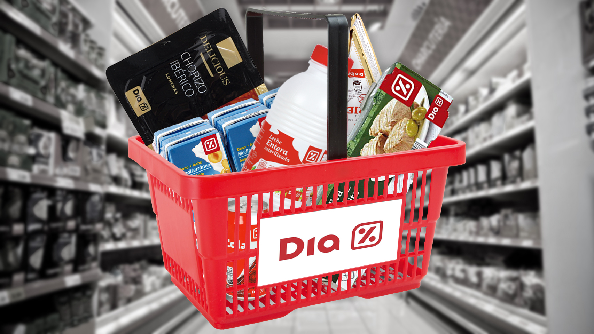

Nuestra red de más de 6000 tiendas de proximidad nos permite estar muy presentes en los distintos barrios y conocer de primera mano su realidad a través del talento que nos brindan. Aquí empieza la comunidad DIA, que integra a empleados, franquiciados y clientes.
Trabajamos para facilitar una alimentación de calidad para todas las familias que nos eligen, independientemente de su localización o de su presupuesto
Dado lo especial de la situación, Grupo DIA se ha volcado por una parte en garantizar el abastecimiento, y por otra, en implementar las medidas de seguridad en tienda que propiciaran un entorno seguro para clientes, empleados y franquiciados. Garantizar el abastecimiento ha sido prioritario, especialmente durante el periodo de confinamiento. Para ello:
Todas estas medidas han permitido atender las necesidades de más de 20 millones de familias durante el confinamiento derivado del estado de alarma en Argentina. Propiciar un entorno seguro para clientes y empleados ha sido, y sigue siendo, uno de los puntos más importantes para Grupo DIA durante la pandemia. Por eso, la actividad de sus más de 6.000 tiendas está sometida a unas medidas de protección al cliente y al empleado que van más allá de lo legalmente establecido, incluyendo:
Te presentamos algunos de nuestros productos:
PRODUCTOS
Yerba Dia 1kg
Harina Común Marolio
Azúcar Ledesma
PRECIOS
$380,00
$75,00
$110,00
STOCK DISPONIBLE
460 unidades
380 unidades
850 unidades